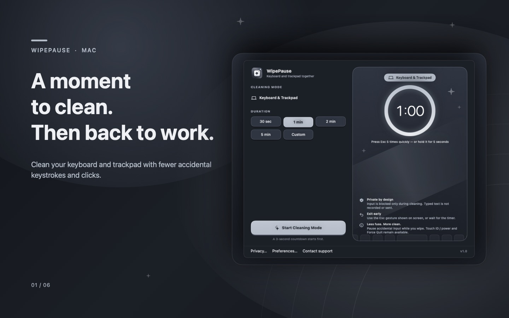

A moment to clean.
Then back to work.
Give your MacBook’s built-in keyboard and trackpad a cleaning break, with fewer accidental keystrokes and clicks.
Meet WipePauseGet supportMade for the built-in keyboard and trackpad of your MacBook. In development.

Choose your time.
Pick a duration for your keyboard and trackpad together. Add a countdown to get ready.
Make room to wipe.
Start Cleaning Mode for a simpler cleaning break, with fewer accidental inputs.
Back to your day.
Let the timer finish, or use the Escape gesture shown on screen to end your session early.
Need a hand?
Questions, a problem, or an idea for WipePause? Email Carlos, the developer.
iamchuck87@gmail.com ↗También puedes escribirnos en español.
Help us understand what happened.
Include your WipePause version, macOS version, Mac model, and a short description of the issue. A screenshot can help.
Please leave out passwords, private documents, and other sensitive information.
Before you start.
How do I end a cleaning session?
Wait for the timer or follow the Escape instruction on the cleaning screen. By default, press Escape five times quickly or hold it continuously for five seconds. You can change the exit gesture in Preferences.
What stays available during cleaning?
Touch ID / power and the system Force Quit shortcut (Command–Option–Escape) remain available. Avoid pressing Touch ID while wiping: it can lock your Mac. WipePause does not disable every hardware or system action.
Why did cleaning pause or stop?
If another window takes keyboard focus, stop wiping and follow the on-screen status. Sleep or a display change can end the session. If WipePause cannot reserve its Escape exit, it will not start. Close password fields or other apps using secure input, then try again.
Does WipePause record my typing?
No. WipePause does not record or send typed text. The current version does not request Accessibility or Input Monitoring permission. See our privacy policy for local preferences and keyboard recovery details.
Something still feels wrong after a session.
Stop cleaning. If keyboard behavior has not returned to normal, reopen WipePause to retry automatic recovery. If a recovery alert appears, choose Restore keyboard settings; you do not need to start a cleaning session. If the problem continues, contact support.
WipePause helps manage input; it does not protect against liquid or physical damage. Follow Apple’s cleaning guidance, including shutting down and unplugging your Mac when instructed.